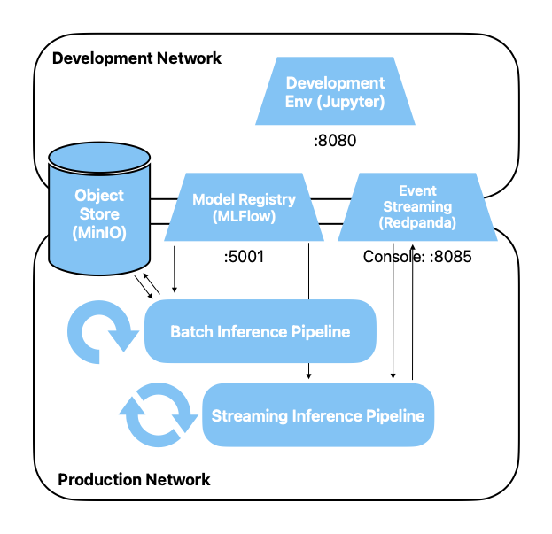

Streaming Inference Pipeline
After building a pipeline for batch inference, we now want to make predictions in
real-time from a stream processing pipeline.
Preparation
Create a new Jupyter notebook for this exercise.
Exercises
Architecture
We are adding another pipeline to our architecture. The pipeline again retrieves the model
from MLFlow. However, it receives the data for inference from Kafka, and writes the
predictions there as well.

Load model
This part remains the same as in the batch pipeline. Import MLFlow, load our model via
the champion alias.
import mlflow
# we never defined an official name, make sure you use the name of your own registered model here
model_name = "mushroom"
# this also only works if you set this alias for above model
model_version_alias = "champion"
model_uri = f"models:/{model_name}@{model_version_alias}"
model = mlflow.sklearn.load_model(model_uri)
Quix
So far, we have communicated with Kafka via the Python module
kafka-python.
However, we will write our pipeline with
Quix Streams.
Quix advertises its product with the following slogan:
Python stream processing made simple
Pure Python. No JVM. No wrappers. No cross-language debugging. Use Streaming DataFrames and
the whole Python ecosystem to develop stream processing pipelines in fewer lines of code.
Quix allows writing stream processing pipelines in Python in a relatively simple way, while
remaining highly scalable through Kafka and Kubernetes support. In particular, no
complex base infrastructure is required to get started.
To get started, read through the three
Core
Concepts streaming,
stream processing, and
stream processing
pipelines.
We will work locally with a StreamingDataFrame, i.e., in our infrastructure on
codespaces, and not with the Quix Cloud. You can find the documentation for StreamingDataFrame
here. Step 3 of the
Quickstart shows an example of
how we will proceed.
Quix Setup
Initialize Quix Streams, analogous to the example from the Quickstart:
from quixstreams import Application
# create main quix object
app = Application(broker_address="event-streaming:9092")
# define topic and message format
input_topic = app.topic(name="mushroom_inference_request", value_deserializer="json")
# create a StreamingDataFrame
sdf = app.dataframe(topic=input_topic)
Now you have a streaming DataFrame that receives Kafka event notifications from the topic
mushroom_inference_request. Extend the above code with a line that outputs each
received message and another line that then executes the entire code.
Attention: You must re-execute the above initialization code every time you have stopped
the consumer so that Quix starts consuming again.
Suggested solution
The StreamingDataFrame.update() function allows executing side effects.
We use it to output the content of each message as a side effect with every update of
the DataFrame, i.e., with every
incoming message. Our messages come as a
dict and print simply outputs this dict.
sdf = sdf.update(print)
# the following is the same but (unnecessarily) more verbose
# sdf = sdf.update(lambda message: print(f"Inference Request: {message}"))
# and this line starts the consumer
app.run(sdf)
When you execute your code, you should see log output showing the setup and reporting
that it is waiting for incoming messages. You now need to produce these.
Start the data generator as follows and then stop it after one or two messages
(ctrl-c). As a reminder: For this to work, you must be in or below the directory
where the docker-compose.yml with all services is located.
docker compose run --rm --name=datagen --entrypoint=python3 development_env mushroom_datagen.py -v
You should see the inference requests sent by the data generator in the notebook.
Next, instead of outputting the message, the model should be called and the
prediction appended as an additional column.
To do this:
- The message must be converted from a dict to a Pandas DataFrame (or a 2D Numpy array)
- The prediction must be made (i.e. the model must be called)
- The result of the prediction must be converted to an integer scalar
- This integer must be appended to the original message (dict) with the key 'prediction'
Try to achieve this with sdf.update() analogous to above. Output the result afterwards
for verification
(also analogous to above).
Suggested solution
import pandas as pd
# as a two-liner, somewhat cryptic:
#sdf = sdf.update(lambda m: m.update({'prediction': int(model.predict(pd.DataFrame(m, index=[0]))[0])}))
#sdf = sdf.update(print)
# or with a separate function, step by step
def predict(d: dict) -> int:
# reads single row dict and returns prediction as integer scalar
# spelled out to make it easier to read
input_as_df = pd.DataFrame(d, index=[0])
pred_as_array = model.predict(input_as_df)
pred_as_scalar = pred_as_array[0]
return int(pred_as_scalar)
# the inner update is the update function of the python dictionary and has nothing to do with quix
sdf.update(lambda m: m.update({'prediction': predict(m)}))
sdf = sdf.update(print)
app.run(sdf)
Finally, we want to output our prediction under a new topic. Define a
topic mushroom_inference_result and make the StreamingDataFrame send each result
to this topic.
Suggested solution
# instead of the last two lines above
output_topic = app.topic(name="mushroom_inference_result", value_deserializer="json")
sdf.to_topic(output_topic)
app.run(sdf)
Finally, send a few messages (inference requests) and check in Redpanda whether the
corresponding prediction results arrive as messages.
Wrapup
In this exercise, you built a stream processing pipeline that receives inference requests for
our mushroom model, makes a prediction with our model, and sends the result
back to Kafka.
In doing so, we also took a few shortcuts, which is acceptable in the context of a course,
but we should also be aware of them:
- We didn't worry about scalability. However, with our setup and thanks to Quix, the
pipeline is easily scalable when running under Kubernetes
- Our message format was very simple and without any metadata
- Our message format was simple json, without schema and validation
- We hardcoded some things and didn't cleanly decouple them (e.g., feature types,
topic)
- No tests, no proper error handling, no monitoring
And in particular
We perform inference with real-time data, which all comes in the request. So we don't use
any pre-calculated features, we don't join any other feature sources. Anyone who wants to know
more
here must delve deeper into stream processing.